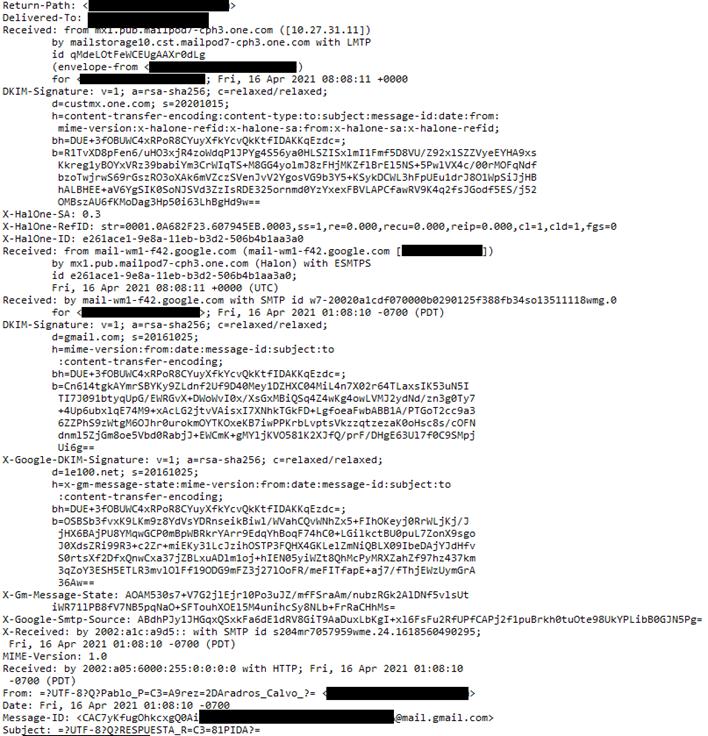
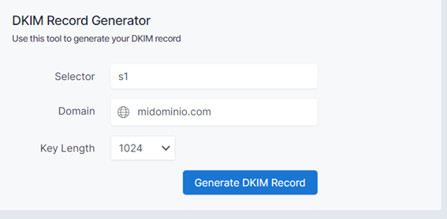
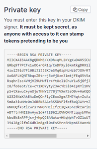
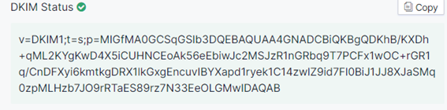
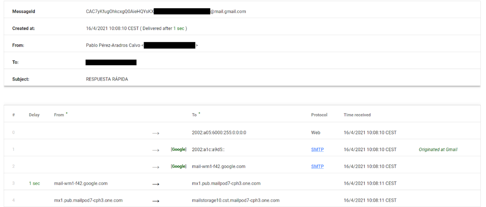
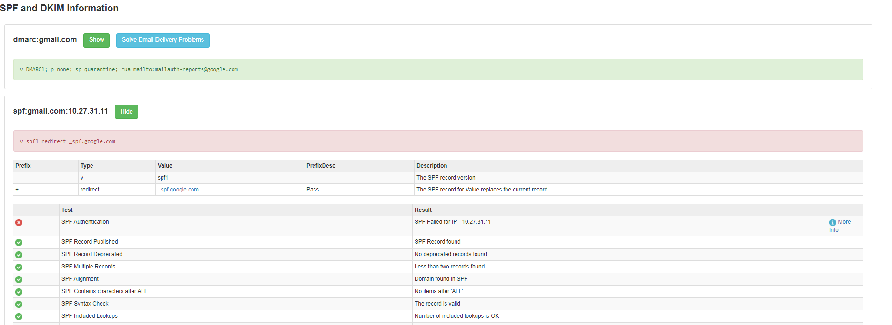

UD 4: Dispositivos y sistemas informáticos externos.
5.1.- Análisis correo electrónico
A través del correo electrónico muchas veces pueden llegarnos correos electrónicos de dudosa procedencia, como, por ejemplo: correos que se hacen pasar por gente que conocemos y que nos piden información personal, correos con facturas que no hemos solicitado etc.
Para controlar la veracidad de estos correos y evitar en un futuro que nos suplanten o intenten suplantar a otro correo de nuestra organización debemos tener en cuenta ciertas cabeceras que nos facilitaran en gran medida a protegernos. Cada correo electrónico que es enviado dispone de unas cabeceras con información sobre el remitente entre ella, su dirección IP.
Ejemplo:

SPF
Sender Policity Framework, es una protección contra la falsificación de direcciones en el envío de correos electrónicos. Se define a través de un registro DNS en el que se incluye aquellos servidores que tienen potestad para enviar mensajes con ese dominio de correo. En caso de enviarse un correo desde un servidor no legítimo, podremos comprobarlo leyendo estas cabeceras.Para configurar esta entrada, debemos definir en el servidor DNS una nueva entra TXT y definirla con una configuración similar a la siguiente:
v=spf1 include:<servidor de correo legítimo> ~all
De esta manera solo obtendrán la cabecera correcta aquellos correos enviados desde el servidor SMTP legítimo.
DKIM
Domain Keys Identified Mail, es un mecanismo que permite al receptor de un correo electrónico verificar que fue enviado y autorizado por el dueño del dominio de correo.
Para su creación es necesario disponer de un entendimiento entre el dominio receptor y la entidad firmante. Debemos disponer de una cuenta en dicha entidad y generar el certificado. Para ello podemos generar fácilmente una entrada desde la siguiente página web:
Definimos nuestro dominio:

Una vez generado, nos creará una clave privada que debemos especificar en la entidad firmante.

Finalmente nos facilitará una entrada TXT que debemos añadir a nuestro host de dominio.

DMARC"
Domain-based Message Authentication Reporting and Conformance, es otro mecanismo de autenticación de correo, amplía la seguridad de los mecanismos anteriores, permitiendo a un dominio verificar el campo "From" de un correo electrónico.
Para configurarlo deberemos crear un nuevo registro TXT con la estructura:
_dmarc.nuestrodominio.TLD IN TXT 18000 "v=DMARC1; p=none;
rua=mailto:postmaster@nuestrodominio.com"
Unas herramientas útiles a la hora de comprobar si un correo es legítimo o no, son:
https://toolbox.googleapps.com/apps/messageheader/


https://mxtoolbox.com/EmailHeaders.aspx
Ambas herramientas nos mostrarán información relevante disponible en las cabeceras de un modo más amable para el usuario.
Obra publicada con Licencia Creative Commons Reconocimiento Compartir igual 4.0